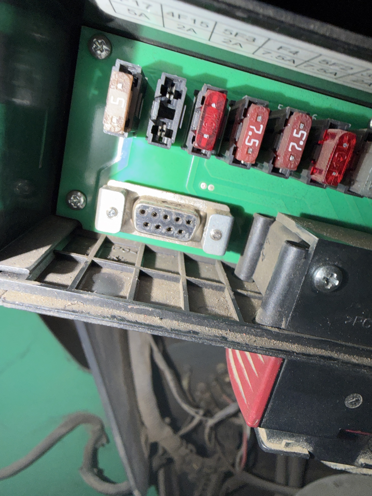
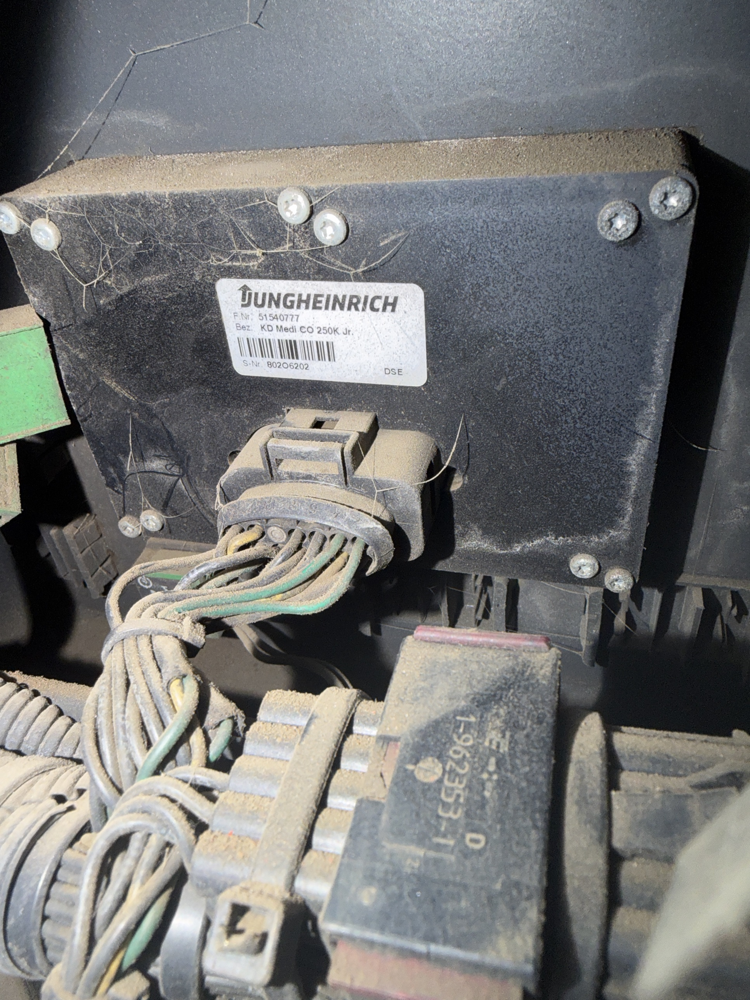
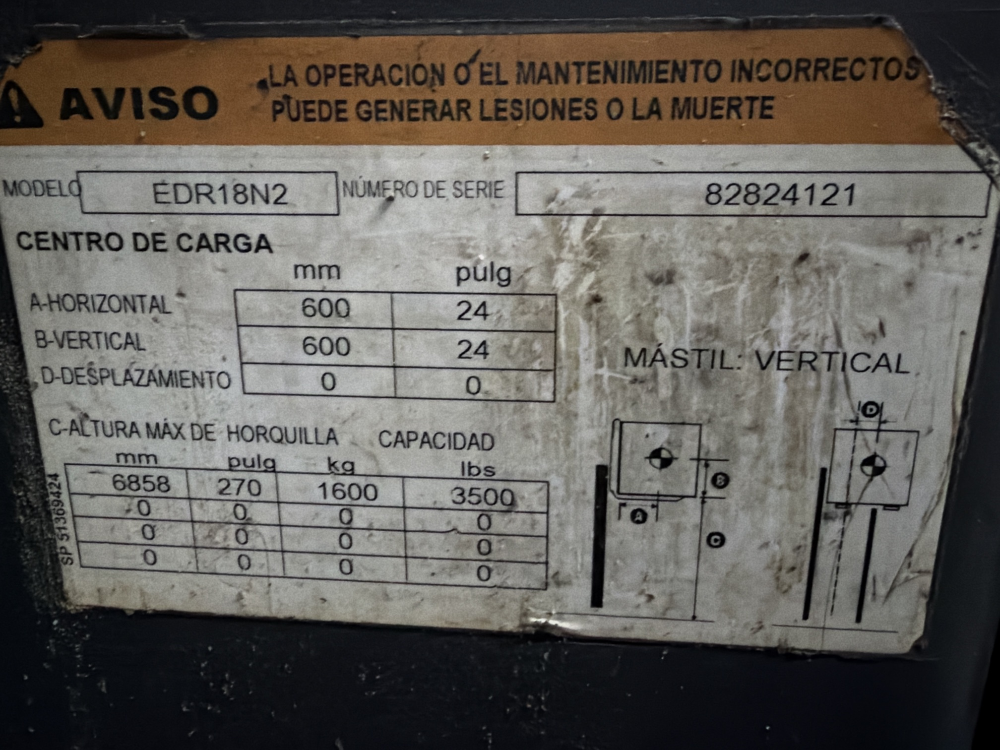
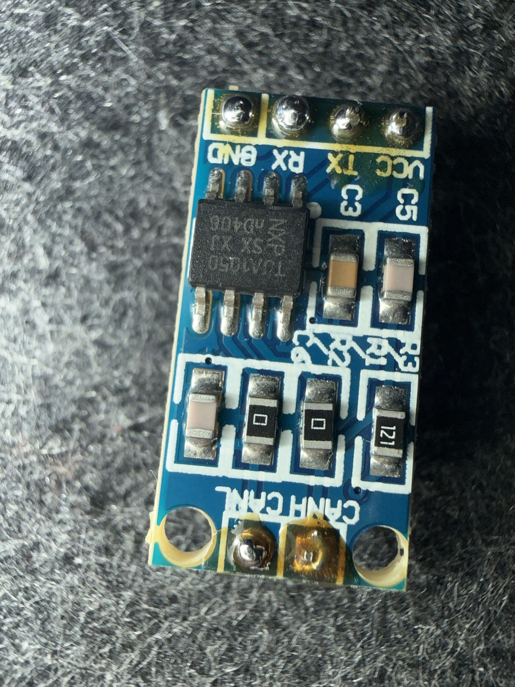
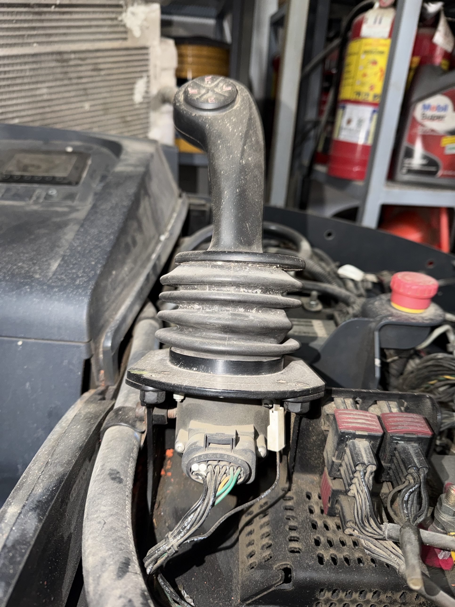

Lo que se fue descubriendo en el equipo, con foto. De septiembre a octubre de 2026.


F.Nr 51540777) delata el origen: un
Jungheinrich con placa de Mitsubishi. Por eso Judit, su herramienta nativa, aplica.


prueba_can 20/20. Con él
pudimos leer el bus del equipo — el punto de inflexión del proyecto.

.json y el Python para el planificador. Abrila y dejala en
favoritos antes de ir — después no hace falta señal.